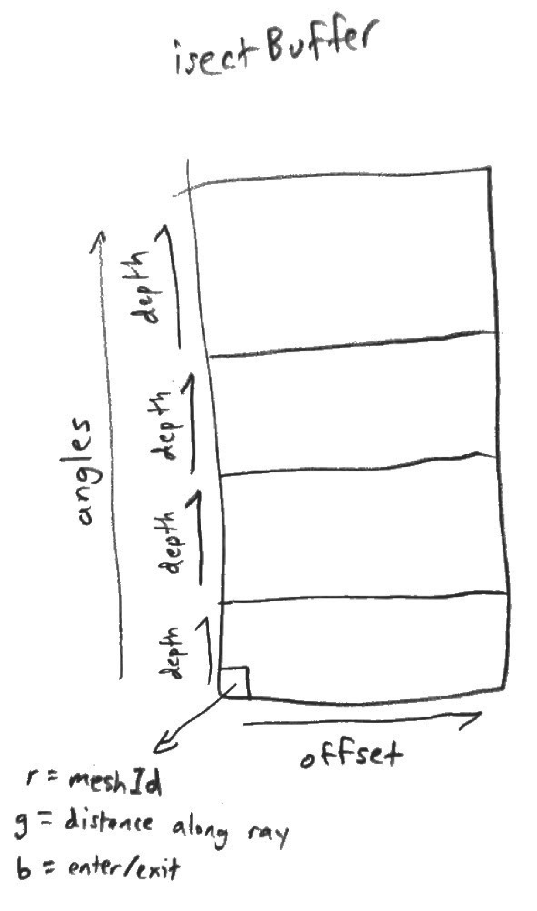
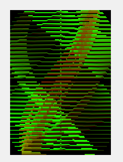
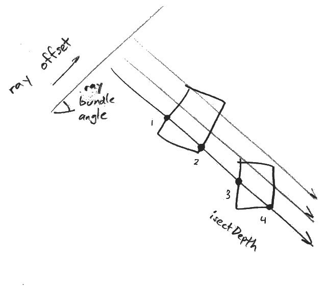

Project Recap
Real-time global illumination remains an unsolved problem in high-fidelity graphics. Traditional raytracing (i.e. pathtracing) casts rays from the camera into the scene. This becomes prohibitively expensive as the number of ray bounces grows. Dependencies between rays and the high cost of testing intersections also make raytracing difficult to parallelize on a GPU. Photon mapping, which casts rays from light sources, faces the same problem.
We propose a raytracing algorithm utilizes the GPU more effectively by casting rays in parallel bundles. This algorithm calculates all potential intersections in a single render pass. As a result, it can rapidly calculate lighting in the final gather step. By reducing the problem to 2D, it is even possible to run this algorithm in real-time. However, all existing implementations rely on a GPU feature - atomic counters - which has been compromised by the Spectre vulnerability. We are attempting an implementation that does not risk user security, which is necessary to run on a web platform.

|

|

|
Parallel Ray-Bundling
To reach real-time performance, our algorithm must break down into small, parallel tasks that can be written into shader programs that run on the GPU. However, the GPU must also read in scene objects every frame (since defining objects entirely in the shader would limit interactivity). Therefore we use Three.js meshes as our scene objects and calculate lighting solutions based on their current size and position. Our render loop looks like the following:
- Collect mesh information
- Calculate parallel ray intersections
- Calculate light for each bounce
Collecting Mesh Information
To read mesh information in the shader, we tried recompiling the shader every frame, encoding mesh information as a sampling texture, and passing each mesh into the shader as individual uniforms. These were either too slow or limited by hardware constraints. However, by using a feature newly introduced in WebGL2 - uniform buffer objects - we may be able to send to the GPU thousands of bytes containing uniform data.
Calculating Parallel Ray Intersections
The first shader in our render pipeline, the intersection shader outputs a fixed-size texture containing carefully encoded data. We define the x-axis as the index of the parallel offset. This means that horizontally adjacent pixels correspond to adjacent rays, with x=0 being the right-most ray and x=isectWidth being the left-most ray (relative to whichever angle they were cast from). We divided the y-axis into chunks for each angle, with the height of each chunk being the maximum number of intersections each ray can record. The R, G, and B color values of each pixel contain each intersection's meshId and distance along the ray. This lets us quickly determine how far away it is from a point on the same ray and which mesh to lookup for lighting information.
|

|

|
Observe that the intersect buffer has a horizontal striped pattern. This is because parallel rays tend to have similar intersection depths until they enter or exit a mesh. Indeed, we see each mesh forms a vertical pattern, because rays from many angles hit them at gradually differing offsets.
Calculating Light For Each Bounce (Not Yet Implemented)
Once we have calculated the intersection of those rays with all of the meshes and stored it in our intersect buffer, we are able calculate the radiance for all of the scene and reflect that on the lights and shadows shown on the ground. For each pixel, we iterate through each angle. In each angle, we determine the ray passing through that pixel and find the two closest intersections (if they exist). If either of these intersections corresponds to a light-emitting mesh, we calculate the resulting irradiance at the pixel relative to its distance from the intersection. We add together all the irradiances and divide the sum by the number of angles. This should give us direct lighting.
|

|